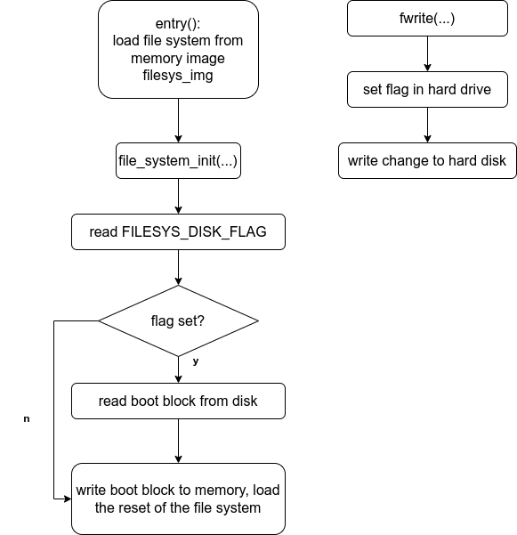

ZinixOS
ZinixOS
Our OS has been depolyed as an online appication. If you want to have have a try, please click the link.
C, x86 assembly, Operating System
This ambitious project is a Unix-like operating system built on the qemu virtual machine. It is the culmination of our operating system design course and is a testament to the hard work and dedication we put into this project. We developed this operating system from the ground up, ensuring that we could support a wide range of features and functionalities. We also added a number of unique features to make it stand out from other operating systems. Ultimately, this project was a great success and we are proud of the hard work and dedication we put into making it a reality. I also found great interest in operating system during this course
- Basic functionalities: Implemented an operating system supporting fundamental features such as scheduling, interrupts, system calls, exceptions, and file systems.
- Additionally, self-designed features were utilised to enhance the system, such as an implicit free list and slab cache to implement a virtual memory allocation system. Furthermore, advanced signals, speaker and hard-disk drivers were also implemented to the system, allowing for an increase in functionality and performance.
Show case of our OS
Two types of memory management
- Fixed length memory allocation
- Variable length memory allocation
Fixed length — Slab Cache
In this specific implementation, fixed length memory allocation is implemented by two parts, memory management unit and memory unit.
fixed length diagram:
|memory management unit| |memory management unit| |memory management unit| .......... |memory unit| |memory unit| |memory unit| .....
|next| ---------------> |next| ---------------> |next| ↑ ↑ ↑
|ptr|---------------------|ptr|---------------------|ptr|---------------------------------------↑--------------↑-------------↑
Data structure: Linked list
- Slab_Create ( name , size )
- destroy , malloc , free
- Automatically shrinks and grows
- quick and fast to allocate and free
- granularity: 1byte - 4kB-8 bytes
Variable length — Implicit free list
On the other hand, variable length memory allocation is implemented very similar to Linux's implicit free list design.
A memory part consists of two parts, memory management unit and real useable memory unit.
Memory management units are held in a linked list to track each memory fragments have been allocated.
variable length diagram:
|memory mangement unit| -> |memory mangement unit| -> |memory mangement unit| -> |memory mangement unit|
----------------------- ----------------------- ----------------------- -----------------------
| | | | | | | |
| useable memory | | useable memory | | useable memory | | useable memory |
| | | | ----------------------- | |
| | ----------------------- -----------------------
| |
-----------------------
Slab cache's implementation is based on fixed length memory allocation.
Data structure: Implicit free list
- varmalloc( size )
- flexible: can allocate any size
- granularity: 1byte - 4MB
Memory allocation system and memory supevise system
Signal
Support users to set handler they define
Support sigreturn and set_handler syscall
Support five signals:
- SIG_DIV_ZERO
- SIG_SEGFAULT
- SIG_INTERRUPT
- SIG_ALARM
- SIG_USER1
signal tests for our signal implementation
ATA Hard Disk Support & File System
-
Writable file system
write fname contents -
Persistent Change (after reboot) by saving the change to the hard drive
-
How the file system is loaded and initialized:

Speaker Driver
Key mapping:
(C3~E4) ZSXDCVGBHNJM,L.;/
(C4~G5) Q2W3ER5T6Y7UI9O0P[=]
Runs concurrently with any user programs & across terminals
part of the code for our ‘keyboard piano’
Enjoy Reading This Article?
Here are some more articles you might like to read next: